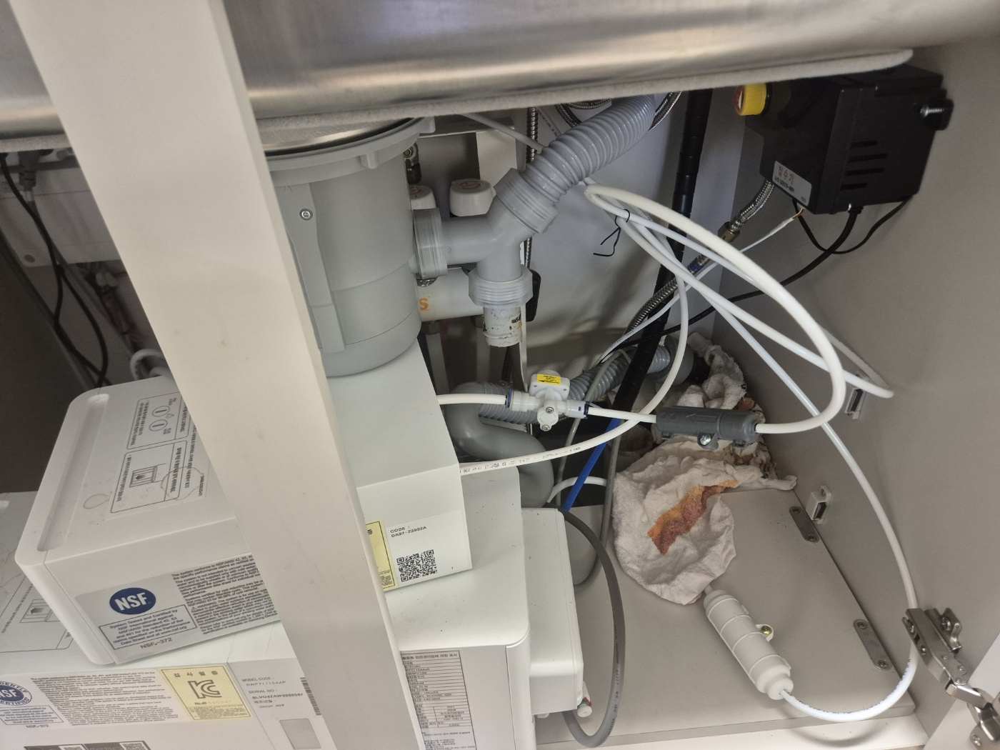
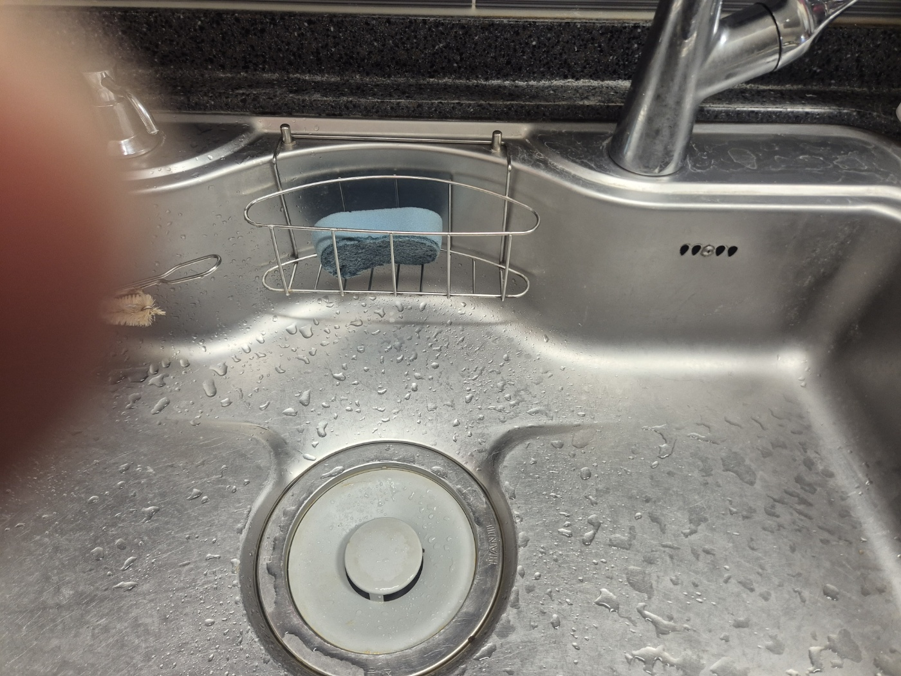
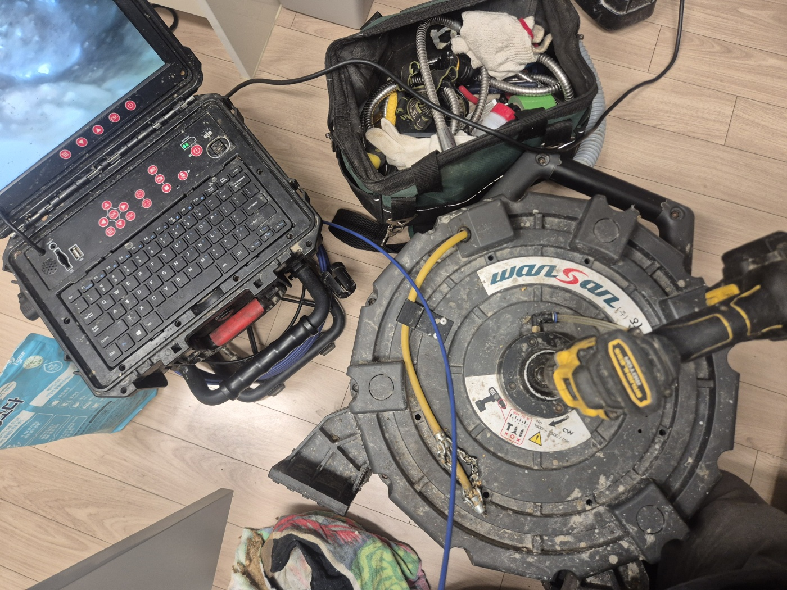
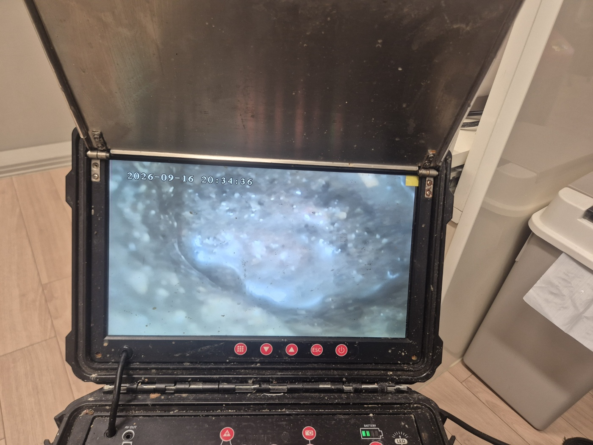
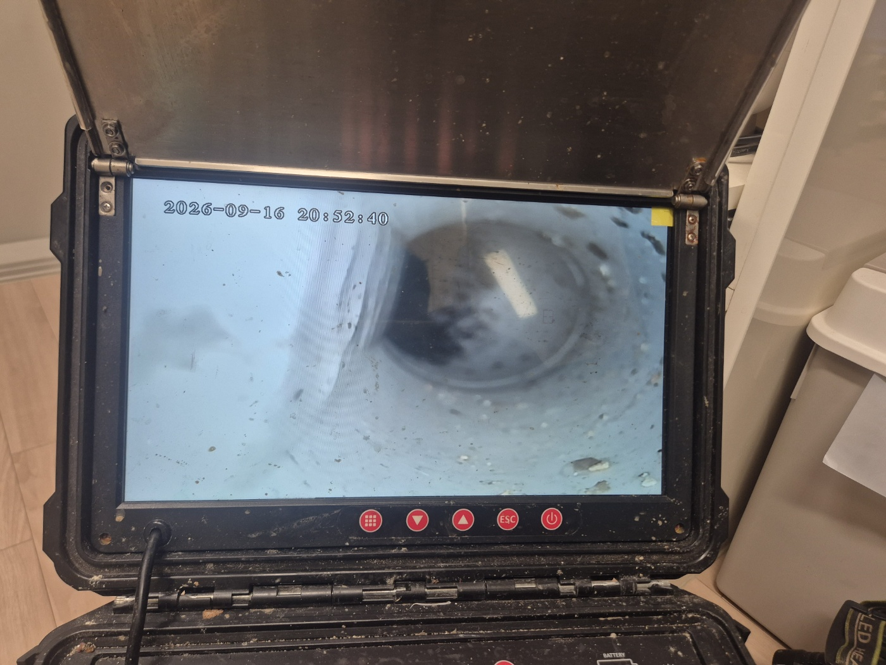

안녕하세요.. 고고고 설비입니다.. 오늘은 화성시 남양읍 가정집에서 싱크대막힘 하수구역류로 출동한 현장을 소개해드릴게요. 설거지할 때마다 물이 천천히 빠지고 거품까지 올라온다는 연락을 받았습니다.
정수기와 배관이 뒤엉켜 있는 싱크대 하부장을 먼저 열어 연결 상태를 확인했어요. 배관 자체는 멀쩡해 보여서, 막힘이 더 안쪽에 있다고 판단했습니다.
개수대에는 물이 고여있던 흔적과 거품이 남아 있었어요. 배수구 뚜껑을 열어보니 물 빠지는 속도가 눈에 띄게 둔한 상태였습니다.

육안으로는 원인을 찾기 어려운 상황이라 내시경 장비를 꺼내 준비했어요. 모니터를 열고 와이어를 배관 안으로 밀어 넣을 준비를 했습니다.

와이어를 밀어 넣자 화면에 뿌연 거품과 기름기가 가득한 배관 내부가 보였어요. 각도를 바꿔가며 안쪽을 더 들여다봤습니다.

조금 더 깊이 들어가자 배관 벽면에 이물질이 붙어있는 게 보다 선명하게 보였어요. 이 부분이 물빠짐을 더디게 만든 원인이었습니다.

원인을 확인한 뒤 배관에 쌓인 기름때와 이물질을 제거하고, 물을 반복해서 흘려보내며 제대로 빠지는지 확인하고 마무리했습니다.
고고고 설비는 주택, 아파트, 원룸, 상가, 공장의 생활 하수 오수 배관을 관리해 주는 업체입니다. 고고고 설비에 전화 주시면 친절상담 정확한 진단 확실한 해결로 보답해 드리겠습니다!!